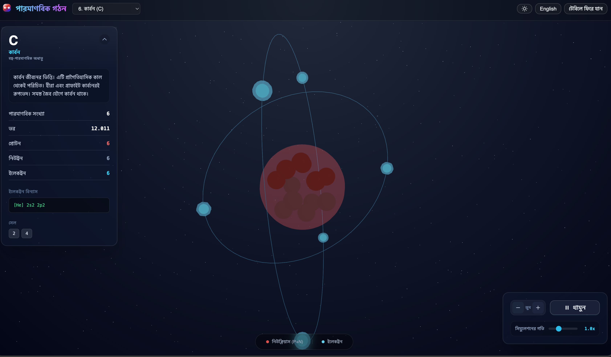
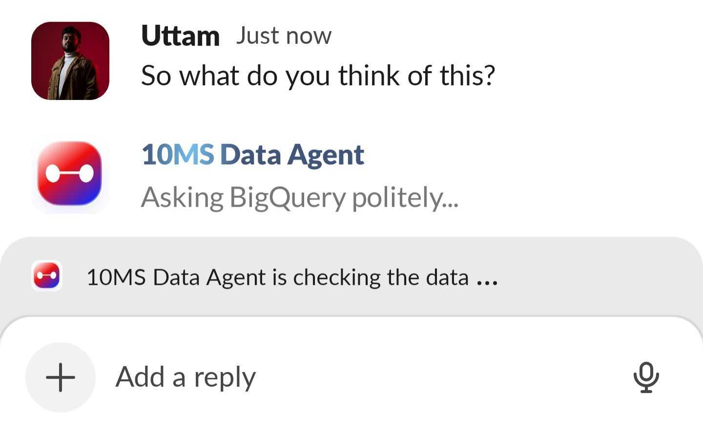
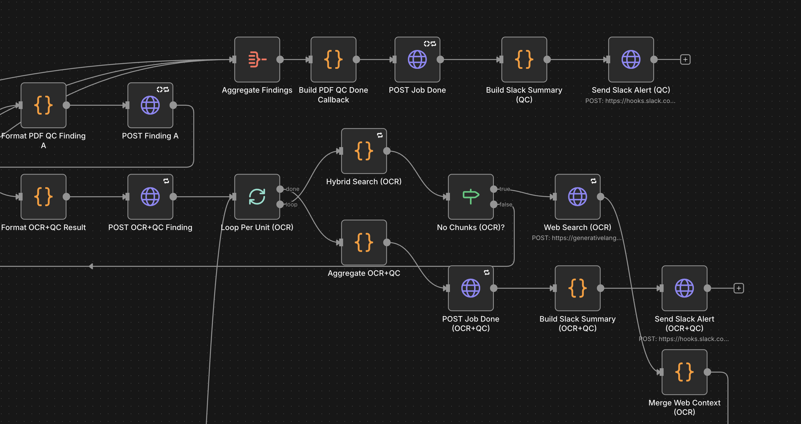
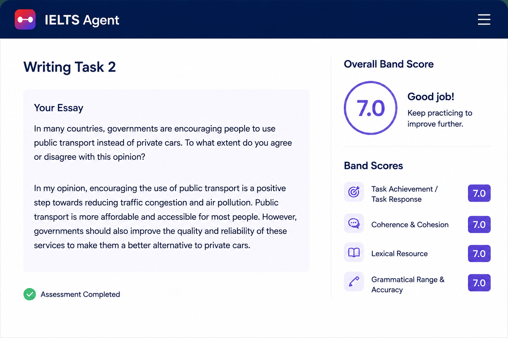

Internal products get a real audience early instead of waiting in a queue for someday.
A 10 Minute School initiative
Internal ideas, tested in the open.
Origin Labs is the 10 Minute School initiative for putting early internal products in front of real users, learning from how they are actually used, and only graduating the ones that earn it into full products.
Live under Origin Labs
4
live products
8K+
users reached
Real
user feedback
Real users shape direction early, so we iterate on signal instead of assumptions.
Products that prove value graduate into internal or user-facing tools. The rest teach us something.
How it works
From an internal idea
to a product that earns its place.
Origin Labs is a loop, not a launch. An idea becomes something people can touch, the usage tells us the truth, and the truth decides what happens next.
01
Build
An internal product is built to solve a real 10 Minute School workflow, not a hypothetical one.
02
Showcase & demo
It goes live under Origin Labs so real users can try it where they already work.
03
Listen & iterate
Usage and feedback turn into the next version. We follow the signal, not the loudest opinion.
04
Graduate
If it earns it, the product ships for wider internal or public use. If not, it taught us something cheap.
The products
Four products,
live under Origin Labs.
Each one started as an internal tool, went in front of real users through Origin Labs, and is being shaped by how people actually use it.
01 Sims
Community-built simulations that make concepts playable.
Sims are community-driven mini learning apps platform that turn hard ideas into something a student can touch. TenTen can surface a relevant Sim the moment a question is asked, or a teacher can launch one live in class.
- 24 Sims built by the community and growing, across chemistry, physics, biology, and math.
- 8,000 users within the first week of release.
- I built the core Sims architecture and guide creators through Cross-Agent Tasks, where my agent coaches each creator's agent toward learning-outcome-driven Sims.


02 Data Agent
Ask your business data in plain language.
Data Agent understands 10MS and English Centre business logic, queries the warehouse, and returns answers, tables, and charts. Save any result into a personal dashboard and refresh it only when you actually need the latest numbers.
- Lives where teams already work, inside Slack and Google Chat, and a cross-syncing dedicated GUI.
- Everyone builds their own dashboard with only the data they need.
- Manual refresh keeps compute cost low instead of running SQL while everyone is asleep.
- A conservative model puts savings around 200 analyst hours per month.
03 QC Agent
First-pass content QC at machine speed.
QC Agent runs inside Google Sheets through Apps Script and n8n. It reviews MCQs, OCRs PDFs into CMS-ready rows, checks content against TenTen's knowledge base, and hands teachers a clean doc with only the rows that need attention. It is a QC app builder, not just one app.
- About 19x to 23x faster first-pass review, roughly 8 seconds per MCQ or 30 seconds per page versus 8 to 10 minutes by hand.
- Around 300 review hours saved per week in beta, on track toward 500 to 750.
- A 200-page PDF goes from raw scan to OCR’d, CMS-ready, and QC-vetted in a couple of hours instead of a week.


04 IELTS Agent
Autonomous IELTS writing assessment.
IELTS Agent evaluates Writing Task 1 and Task 2 automatically the moment a student submits through our CBT platform. It gives consistent, rubric-aligned feedback without waiting for an instructor to free up.
Built from my own experience teaching IELTS, it is used across our learning centres in Dhaka and Chittagong, where it turns a slow, manual grading step into instant feedback students can act on.
Signal so far
Real usage, not
a demo-day spike.
The point of Origin Labs is to find out what actually works. These are the early numbers from products living in front of real users.
Sims users in week one
Students reached within the first week of the Sims release, and still growing.
Hours saved weekly
QC Agent already saves around 300 review hours per week while still in beta.
Products in the open
Four internal products live under Origin Labs and gathering real feedback.
The bigger idea
Internal ideas become things users actually touch.
Origin Labs turns the gap between a good internal idea and a real product into a short, honest feedback loop.